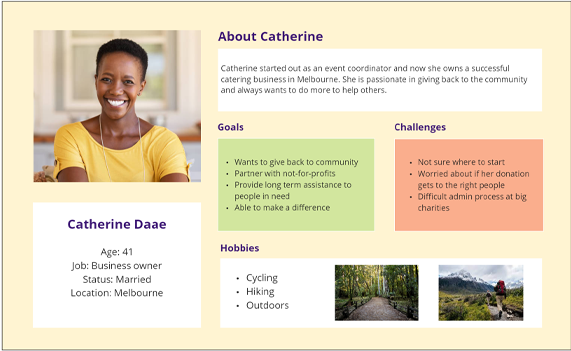

Our object was to redesign the website of WLHH page. We started
with the interview with the Chairperson of this organisation, Autumn Pierce. During this
interview, we understood the actual user of the current website. We learn about their style
guide, and future modification related to the website.
Our core objective was to understand the user experience and pain points when using WLHH
website

Definition & Synthesis
TWe found that the main color of the website was used a lot.
They wanted to have a “Quick Exit button” that can help them to exit the website at any point
The many links were broken. The data was a bit old as well.
Users wanted to have that simpler and easier.
Ideation
After the interview and survey data, we worked on the style guide
and sitemap. With their brand color, we created a new color palate that looks elegant and
pleasing.
We created on the function of “quick exit”
Prototyping (low-hi), User Testing & Outcomes
We did the competitor analysis to understand the other
competitors. On basis of the that data and user need we created few prototypes, and we tested
them with the 5 second test method with 4 different users. We received some critics, and we
modified the website accordingly. The feedback we received was as below:
Various iterations on font size, colour schemes, layout
Removed unnecessary buttons and components
Conclusion & Future Opportunities
We came up with completely new look and design of the website.
During this project, I gain below skill.